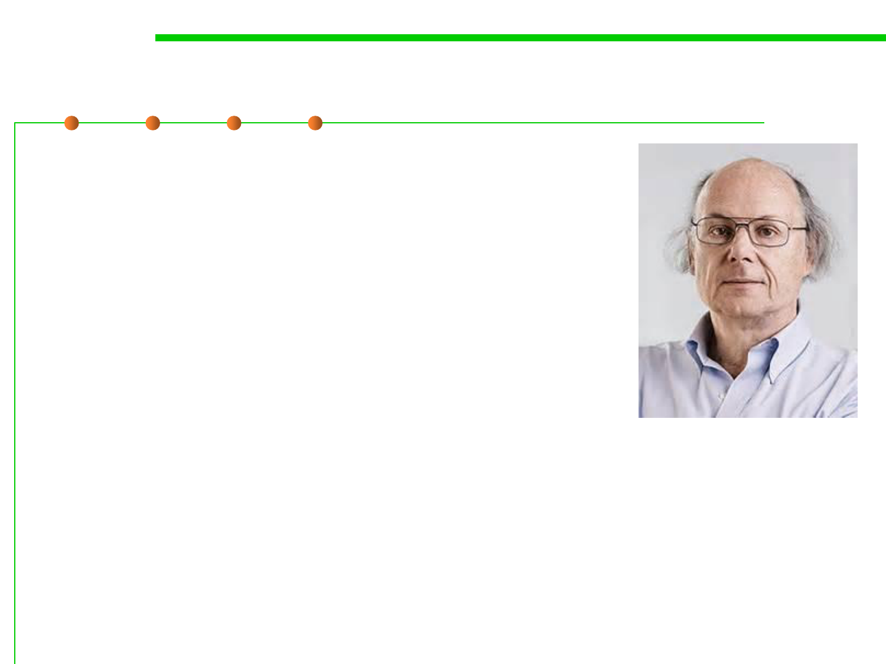

4.1 Construction for Understandability
What Stroustrup (inventor of C++) said
▪ “I like my code to be elegant and efficient.
– The logic should be straightforward to make it
hard for bugs to hide (This chapter)
– The dependencies minimal to ease maintenance
(Chapter 6)
– Error handling complete according to an articulated
strategy (Chapter 7)
– Performance close to optimal so as not to tempt
people to make the code messy with unprincipled
optimizations (Chapter 8)
▪ Clean code does one thing well.”